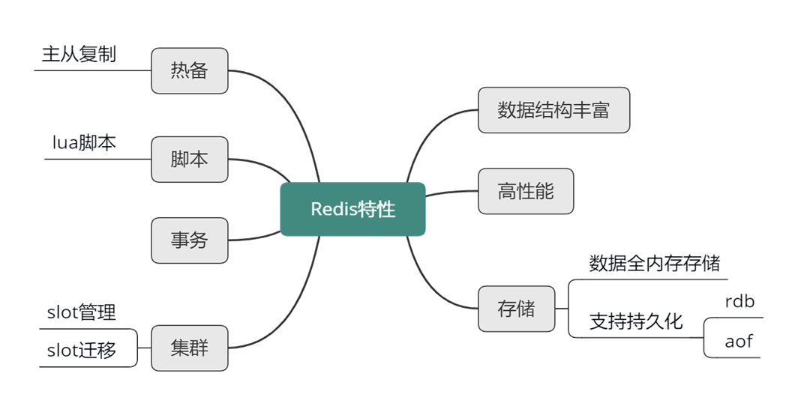
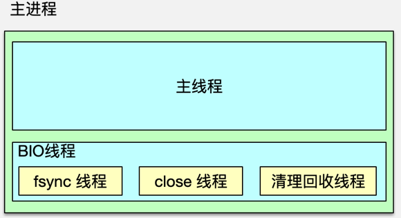
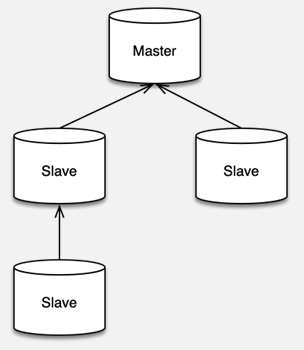

- 00 开篇寄语：缓存，你真的用对了吗？.md.html
- 01 业务数据访问性能太低怎么办？.md.html
- 02 如何根据业务来选择缓存模式和组件？.md.html
- 03 设计缓存架构时需要考量哪些因素？.md.html
- 04 缓存失效、穿透和雪崩问题怎么处理？.md.html
- 05 缓存数据不一致和并发竞争怎么处理？.md.html
- 06 Hot Key和Big Key引发的问题怎么应对？.md.html
- 07 MC为何是应用最广泛的缓存组件？.md.html
- 08 MC系统架构是如何布局的？.md.html
- 09 MC是如何使用多线程和状态机来处理请求命令的？.md.html
- 10 MC是怎么定位key的.md.html
- 11 MC如何淘汰冷key和失效key.md.html
- 12 为何MC能长期维持高性能读写？.md.html
- 13 如何完整学习MC协议及优化client访问？.md.html
- 14 大数据时代，MC如何应对新的常见问题？.md.html
- 15 如何深入理解、应用及扩展 Twemproxy？.md.html
- 16 常用的缓存组件Redis是如何运行的？.md.html
- 17 如何理解、选择并使用Redis的核心数据类型？.md.html
- 18 Redis协议的请求和响应有哪些“套路”可循？.md.html
- 19 Redis系统架构中各个处理模块是干什么的？.md.html
- 20 Redis如何处理文件事件和时间事件？.md.html
- 21 Redis读取请求数据后，如何进行协议解析和处理.md.html
- 22 怎么认识和应用Redis内部数据结构？.md.html
- 23 Redis是如何淘汰key的？.md.html
- 24 Redis崩溃后，如何进行数据恢复的？.md.html
- 25 Redis是如何处理容易超时的系统调用的？.md.html
- 26 如何大幅成倍提升Redis处理性能？.md.html
- 27 Redis是如何进行主从复制的？.md.html
- 28 如何构建一个高性能、易扩展的Redis集群？.md.html
- 29 从容应对亿级QPS访问，Redis还缺少什么？.md.html
- 30 面对海量数据，为什么无法设计出完美的分布式缓存体系？.md.html
- 31 如何设计足够可靠的分布式缓存体系，以满足大中型移动互联网系统的需要？.md.html
- 32 一个典型的分布式缓存系统是什么样的？.md.html
- 33 如何为秒杀系统设计缓存体系？.md.html
- 34 如何为海量计数场景设计缓存体系？.md.html
- 35 如何为社交feed场景设计缓存体系？.md.html
16 常用的缓存组件Redis是如何运行的？
你好，我是你的缓存课老师陈波，欢迎进入第 16 课时“Redis 基本原理”的学习。
Redis 基本原理
Redis 简介
Redis 是一款基于 ANSI C 语言编写的，BSD 许可的，日志型 key-value 存储组件，它的所有数据结构都存在内存中，可以用作缓存、数据库和消息中间件。
Redis 是 Remote dictionary server 即远程字典服务的缩写，一个 Redis 实例可以有多个存储数据的字典，客户端可以通过 select 来选择字典即 DB 进行数据存储。
Redis 特性
同为 key-value 存储组件，Memcached 只能支持二进制字节块这一种数据类型。而 Redis 的数据类型却丰富的多，它具有 8 种核心数据类型，每种数据类型都有一系列操作指令对应。Redis 性能很高，单线程压测可以达到 10~11w 的 QPS。
虽然 Redis 所有数据的读写操作，都在内存中进行，但也可以将所有数据进行落盘做持久化。Redis 提供了 2 种持久化方式。
- 快照方式，将某时刻所有数据都写入硬盘的 RDB 文件；
- 追加文件方式，即将所有写命令都以追加的方式写入硬盘的 AOF 文件中。
线上 Redis 一般会同时使用两种方式，通过开启 appendonly 及关联配置项，将写命令及时追加到 AOF 文件，同时在每日流量低峰时，通过 bgsave 保存当时所有内存数据快照。
对于互联网系统的线上流量，读操作远远大于写操作。以微博为例，读请求占总体流量的 90%左右。大量的读请求，通常会远超 Redis 的可承载范围。此时，可以使用 Redis 的复制特性，让一个 Redis 实例作为 master，然后通过复制挂载多个不断同步更新的副本，即多个 slave。通过读写分离，把所有写操作落在 Redis 的 master，所有读操作随机落在 Redis 的多个 slave 中，从而大幅提升 Redis 的读写能力。
Lua 是一个高效、简洁、易扩展的脚本语言，可以方便的嵌入其他语言中使用。Redis 自 2.6 版本开始支持 Lua。通过支持 client 端自定义的 Lua 脚本，Redis 可以减少网络开销，提升处理性能，还可以把脚本中的多个操作作为一个整体来操作，实现原子性更新。
Redis 还支持事务，在 multi 指令后，指定多个操作，然后通过 exec 指令一次性执行，中途如果出现异常，则不执行所有命令操作，否则，按顺序一次性执行所有操作，执行过程中不会执行任何其他指令。
Redis 还支持 Cluster 特性，可以通过自动或手动方式，将所有 key 按哈希分散到不同节点，在容量不足时，还可以通过 Redis 的迁移指令，把其中一部分 key 迁移到其他节点。

对于 Redis 的特性，可以通过这张思维导图，做个初步了解。在后面的课程中，我会逐一进行详细讲解。
作为缓存组件，Redis 的最大优势是支持丰富的数据类型。目前，Redis 支持 8 种核心数据类型，包括 string、list、set、sorted set、hash、bitmap、geo、hyperloglog。
Redis 的所有内存数据结构都存在全局的 dict 字典中，dict 类似 Memcached 的 hashtable。Redis 的 dict 也有 2 个哈希表，插入新 key 时，一般用 0 号哈希表，随着 key 的插入或删除，当 0 号哈希表的 keys 数大于哈希表桶数，或 kyes 数小于哈希桶的 1/10 时，就对 hash 表进行扩缩。dict 中，哈希表解决冲突的方式，与 Memcached 相同，也是使用桶内单链表，来指向多个 hash 相同的 key/value 数据。
Redis 高性能
Redis 一般被看作单进程/单线程组件，因为 Redis 的网络 IO 和命令处理，都在核心进程中由单线程处理。Redis 基于 Epoll 事件模型开发，可以进行非阻塞网络 IO，同时由于单线程命令处理，整个处理过程不存在竞争，不需要加锁，没有上下文切换开销，所有数据操作都是在内存中操作，所以 Redis 的性能很高，单个实例即可以达到 10w 级的 QPS。核心线程除了负责网络 IO 及命令处理外，还负责写数据到缓冲，以方便将最新写操作同步到 AOF、slave。
除了主进程，Redis 还会 fork 一个子进程，来进行重负荷任务的处理。Redis fork 子进程主要有 3 种场景。
- 收到 bgrewriteaof 命令时，Redis 调用 fork，构建一个子进程，子进程往临时 AOF文件中，写入重建数据库状态的所有命令，当写入完毕，子进程则通知父进程，父进程把新增的写操作也追加到临时 AOF 文件，然后将临时文件替换老的 AOF 文件，并重命名。
- 收到 bgsave 命令时，Redis 构建子进程，子进程将内存中的所有数据通过快照做一次持久化落地，写入到 RDB 中。
- 当需要进行全量复制时，master 也会启动一个子进程，子进程将数据库快照保存到 RDB 文件，在写完 RDB 快照文件后，master 就会把 RDB 发给 slave，同时将后续新的写指令都同步给 slave。

主进程中，除了主线程处理网络 IO 和命令操作外，还有 3 个辅助 BIO 线程。这 3 个 BIO 线程分别负责处理，文件关闭、AOF 缓冲数据刷新到磁盘，以及清理对象这三个任务队列。
Redis 在启动时，会同时启动这三个 BIO 线程，然后 BIO 线程休眠等待任务。当需要执行相关类型的后台任务时，就会构建一个 bio_job 结构，记录任务参数，然后将 bio_job 追加到任务队列尾部。然后唤醒 BIO 线程，即可进行任务执行。
Redis 持久化
Redis 的持久化是通过 RDB 和 AOF 文件进行的。RDB 只记录某个时间点的快照，可以通过设置指定时间内修改 keys 数的阀值，超过则自动构建 RDB 内容快照，不过线上运维，一般会选择在业务低峰期定期进行。RDB 存储的是构建时刻的数据快照，内存数据一旦落地，不会理会后续的变更。而 AOF，记录是构建整个数据库内容的命令，它会随着新的写操作不断进行追加操作。由于不断追加，AOF 会记录数据大量的中间状态，AOF 文件会变得非常大，此时，可以通过 bgrewriteaof 指令，对 AOF 进行重写，只保留数据的最后内容，来大大缩减 AOF 的内容。

为了提升系统的可扩展性，提升读操作的支撑能力，Redis 支持 master-slave 的复制功能。当 Redis 的 slave 部署并设置完毕后，slave 会和 master 建立连接，进行全量同步。
第一次建立连接，或者长时间断开连接后，缺失的指令超过 master 复制缓冲区的大小，都需要先进行一次全量同步。全量同步时，master 会启动一个子进程，将数据库快照保存到文件中，然后将这个快照文件发给 slave，同时将快照之后的写指令也同步给 slave。
全量同步完成后，如果 slave 短时间中断，然后重连复制，缺少的写指令长度小于 master 的复制缓冲大小，master 就会把 slave 缺失的内容全部发送给 slave，进行增量复制。
Redis 的 master 可以挂载多个 slave，同时 slave 还可以继续挂载 slave，通过这种方式，可以有效减轻 master 的压力，同时在 master 挂掉后，可以在 slave 通过 slaveof no one 指令，使当前 slave 停止与 master 的同步，转而成为新的 master。
Redis 集群管理
Redis 的集群管理有 3 种方式。
- client 分片访问，client 对 key 做 hash，然后按取模或一致性 hash，把 key 的读写分散到不同的 Redis 实例上。
- 在 Redis 前加一个 proxy，把路由策略、后端 Redis 状态维护的工作都放到 proxy 中进行，client 直接访问 proxy，后端 Redis 变更，只需修改 proxy 配置即可。
- 直接使用 Redis cluster。Redis 创建之初，使用方直接给 Redis 的节点分配 slot，后续访问时，对 key 做 hash 找到对应的 slot，然后访问 slot 所在的 Redis 实例。在需要扩容缩容时，可以在线通过 cluster setslot 指令，以及 migrate 指令，将 slot 下所有 key 迁移到目标节点，即可实现扩缩容的目的。
至此，Redis 的基本原理就讲完了，相信你对 Redis 应该有了一个大概的了解。接下来，我将开始逐一深入分析 Redis 的各个技术细节。